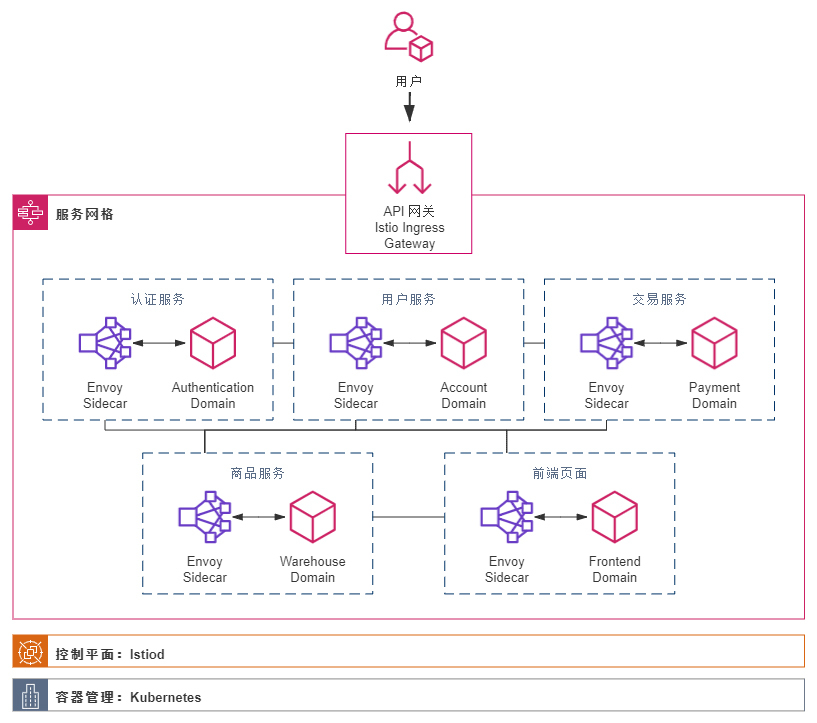

- 00 _导读 _ 什么是“The Fenix Project”？.md
- 00 开篇词 _ 如何构建一个可靠的分布式系统？.md
- 01 _ 原始分布式时代：Unix设计哲学下的服务探索.md
- 02 _ 单体系统时代：应用最广泛的架构风格.md
- 03 _ SOA时代：成功理论与失败实践.md
- 04 _ 微服务时代：SOA的革命者.md
- 05 _ 后微服务时代：跨越软件与硬件之间的界限.md
- 06 _ 无服务时代：“不分布式”云端系统的起点.md
- 07 _ 远程服务调用（上）：从本地方法到远程方法的桥梁.md
- 08 _ 远程服务调用（下）：如何选择适合自己的RPC框架？.md
- 09 _ RESTful服务（上）：从面向过程编程到面向资源编程.md
- 10 _ RESTful服务（下）：如何评价服务是否RESTful？.md
- 11 _ 本地事务如何实现原子性和持久性？.md
- 12 _ 本地事务如何实现隔离性？.md
- 13 _ 全局事务和共享事务是如何实现的？.md
- 14 _ 分布式事务之可靠消息队列.md
- 15 _ 分布式事务之TCC与SAGA.md
- 16 _ 域名解析系统，优化HTTP性能的第一步.md
- 17 _ 客户端缓存是如何帮助服务器分担流量的？.md
- 18 _ 传输链路，优化HTTP传输速度的小技巧.md
- 19 _ 如何利用内容分发网络来提高网络性能？.md
- 20 _ 常见的四层负载均衡的工作模式是怎样的？.md
- 21 _ 服务端缓存的三种属性.md
- 22 _ 分布式缓存如何与本地缓存配合，提高系统性能？.md
- 23 _ 认证：系统如何正确分辨操作用户的真实身份？.md
- 24 _ 授权（上）：系统如何确保授权的过程可靠？.md
- 25 _ 授权（下）：系统如何确保授权的结果可控？.md
- 26 _ 凭证：系统如何保证与用户之间的承诺是准确完整且不可抵赖的？.md
- 27 _ 保密：系统如何保证敏感数据无法被内外部人员窃取滥用？.md
- 28 _ 传输（上）：传输安全的基础，摘要、加密与签名.md
- 29 _ 传输（下）：数字证书与传输安全层.md
- 30 _ 验证：系统如何确保提交给服务的数据是安全的？.md
- 31 _ 分布式共识（上）：想用好分布式框架，先学会Paxos算法吧.md
- 32 _ 分布式共识（下）：Multi Paxos、Raft与Gossip，分布式领域的基石.md
- 33 _ 服务发现如何做到持续维护服务地址在动态运维中的时效性？.md
- 34 _ 路由凭什么作为微服务网关的基础职能？.md
- 35 _ 如何在客户端实现服务的负载均衡？.md
- 36 _ 面对程序故障，我们该做些什么？.md
- 37 _ 要实现某种容错策略，我们该怎么做？.md
- 38 _ 限流的目标与模式.md
- 39 _ 如何构建零信任网络安全？.md
- 40 _ 如何实现零信任网络下安全的服务访问？.md
- 41 _ 分布式架构中的可观测到底说的是什么？.md
- 42 _ 分析日志真的没那么简单.md
- 43 _ 一个完整的分布式追踪系统是什么样子的？.md
- 44 _ 聚合度量能给我们解决什么问题？.md
- 45 _ 模块导学：从微服务到云原生.md
- 46 _ 容器的崛起（上）：文件、访问、资源的隔离.md
- 47 _ 容器的崛起（下）：系统、应用、集群的封装.md
- 48 _ 以容器构建系统（上）：隔离与协作.md
- 49 _ 以容器构建系统（下）：韧性与弹性.md
- 50 _ 应用为中心的封装（上）：Kustomize与Helm.md
- 51 _ 应用为中心的封装（下）：Operator与OAM.md
- 52 _ Linux网络虚拟化（上）：信息是如何通过网络传输被另一个程序接收到的？.md
- 53 _ Linux网络虚拟化（下）：Docker所提供的容器通讯方案有哪些？.md
- 54 _ 容器网络与生态：与CNM竞争过后的CNI下的网络插件生态.md
- 55 _ 谈谈Kubernetes的存储设计理念.md
- 56 _ Kubernetes存储扩展架构：一个真实的存储系统如何接入或移除新存储设备？.md
- 57 _ Kubernetes存储生态系统：几种有代表性的CSI存储插件的实现.md
- 58 _ Kubernetes的资源模型与调度器设计.md
- 59 _ 透明通讯的涅槃（上）：通讯的成本.md
- 60 _ 透明通讯的涅槃（下）：控制平面与数据平面.md
- 61 _ 服务网格与生态：聊聊服务网格的两项标准规范.md
- 63 _ 基于Spring Boot的单体架构.md
- 64 _ 基于Spring Cloud的微服务架构.md
- 65 _ 基于Kubernetes的微服务架构.md
- 66 _ 基于Istio的服务网格架构.md
- 67 _ 基于云计算的无服务架构.md
- 春节特别放送（上）_ 有的放矢，事半功倍.md
- 春节特别放送（下）_ 积累沉淀，知行合一.md
- 用户故事 _ 詹应达：持续成长，不惧未来.md
- 结束语 _ 程序员之路.md
- 结课测试 _ 一套习题，测出你的掌握程度.md
66 _ 基于Istio的服务网格架构
你好，我是周志明。
当软件架构演进到基于Kubernetes实现的微服务时，已经能够相当充分地享受到虚拟化技术发展的红利，比如应用能够灵活地扩容缩容、不再畏惧单个服务的崩溃消亡、立足应用系统更高层来管理和编排各服务之间的版本、交互。
可是，单纯的Kubernetes仍然不能解决我们面临的所有分布式技术问题。
在上一讲针对基于Kubernetes架构中的“技术组件”的介绍里，我已经说过，光靠着Kubernetes本身的虚拟化基础设施，很难做到精细化的服务治理，比如熔断、流控、观测，等等；而即使是那些它可以提供支持的分布式能力，比如通过DNS服务来实现的服务发现与负载均衡，也只能说是初步解决了分布式中如何调用服务的问题而已，只靠DNS其实很难满足根据不同的配置规则、协议层次、均衡算法等，去调节负载均衡的执行过程这类高级的配置需求。
Kubernetes提供的虚拟化基础设施，是我们尝试从应用中剥离分布式技术代码踏出的第一步，但只从微服务的灵活与可控这一点来说，基于Kubernetes实现的版本其实比上一个Spring Cloud版本里用代码实现的效果（功能强大、灵活程度）有所倒退，这也是当时我们没有放弃Hystrix、Spring Security OAuth 2.0等组件的原因。
所以说，Kubernetes给予了我们强大的虚拟化基础设施，这是一把好用的锤子，但我们却不必把所有问题都看作钉子，不必只局限于纯粹基础设施的解决方案。
现在，基于Kubernetes之上构筑的服务网格（Service Mesh）是目前最先进的架构风格，也就是通过中间人流量劫持的方式，以介乎于应用和基础设施之间的边车代理（Sidecar），来做到既让用户代码可以专注业务需求，不必关注分布式的技术，又能实现几乎不亚于此前Spring Cloud时代的那种，通过代码来解决分布式问题的可配置、安全和可观测性。
而这个目标，现在已经成为了最热门的服务网格框架Istio的Slogan：Connect, Secure, Control, And Observe Services。
需求场景
得益于Kubernetes的强力支持，小书店Fenix’s Bookstore已经能够依赖虚拟化基础设施进行扩容缩容，把用户请求分散到数量动态变化的Pod中处理，可以应对相当规模的用户量了。
不过，随着Kubernetes集群中的Pod数量规模越来越庞大，到一定程度之后，运维的同学就会无奈地表示，已经不能够依靠人力来跟进微服务中出现的各种问题了：一个请求在哪个服务上调用失败啦？是A有调用B吗？还是C调用D时出错了？为什么这个请求、页面忽然卡住了？怎么调度到这个Node上的服务比其他Node慢那么多？这个Pod有Bug，消耗了大量的TCP链接数……
而另外一方面，随着Fenix’s Bookstore程序规模与用户规模的壮大，开发团队的人员数量也变得越来越多。尽管根据不同微服务进行拆分，可以把每个服务的团队成员都控制在“2 Pizza Teams”的范围以内，但一个很现实的问题是高端技术人员的数量总是有限的，人多了就不可能保证每个人都是精英，如何让普通的、初级的程序员依然能够做出靠谱的代码，成为这一阶段技术管理者要重点思考的难题。
这时候，团队内部就出现了一种声音：微服务太复杂了，已经学不过来了，让我们回归单体吧……
所以在这样的故事背景下，Fenix’s Bookstore就迎来了它的下一次技术架构的演进，这次的进化的目标主要有两点：
- 目标一：实现在大规模虚拟服务下可管理、可观测的系统。
必须找到某种方法，针对应用系统整体层面，而不是针对单一微服务来连接、调度、配置和观测服务的执行情况。
此时，可视化整个系统的服务调用关系，动态配置调节服务节点的断路、重试和均衡参数，针对请求统一收集服务间的处理日志等功能，就不再是系统锦上添花的外围功能了，而是关系到系统能否正常运行、运维的必要支撑点。
- 目标二：在代码层面，裁剪技术栈深度，回归单体架构中基于Spring Boot的开发模式，而不是Spring Cloud或者Spring Cloud Kubernetes的技术架构。
我们并不是要去开历史的倒车，相反，我们是很贪心地希望开发重新变得简单的同时，又不能放弃现在微服务带来的一切好处。
在这个版本的Fenix’s Bookstore里，所有与Spring Cloud相关的技术组件，比如上个版本遗留的Zuul网关、Hystrix断路器，还有上个版本新引入的用于感知适配Kubernetes环境的Spring Cloud Kubernetes，都将会被拆除掉。如果只观察单个微服务的技术堆栈，它跟最初的单体架构几乎没有任何不同，甚至还更加简单了，连从单体架构开始一直保护着服务调用安全的Spring Security都移除掉了。
由于Fenix’s Bookstore借用了Spring Security OAuth 2.0的密码模式做为登录服务的端点，所以在Jar包层面Spring Security还是存在的，但其用于安全保护的Servlet和Filter已经被关闭掉。
那么从升级目标上，我们可以明确地得到一种导向，也就是我们必须控制住服务数量膨胀后传递到运维团队的压力，只有让“每个运维人员能支持服务的数量”这个比例指标有指数级的提高，才能确保微服务下运维团队的健康运作。
而对于开发团队，我们可以只要求一小部分核心的成员对微服务、Kubernetes、Istio等技术有深刻理解即可，其余大部分的开发人员，仍然可以基于最传统、普通的Spirng Boot技术栈来开发功能。升级改造之后的应用架构如下图所示：

运行程序
在已经部署Kubernetes与Istio的前提下，我们可以通过以下几种途径运行程序，来浏览最终的效果：
- 在Kubernetes无Sidecar状态下运行：
在业务逻辑的开发过程中，或者其他不需要双向TLS、不需要认证授权支持、不需要可观测性支持等非功能性能力增强的环境里，可以不启动Envoy（但还是要安装Istio的，因为用到了Istio Ingress Gateway），工程在编译时已经通过Kustomize产生出集成式的资源描述文件：
# Kubernetes without Envoy资源描述文件
$ kubectl apply -f https://raw.githubusercontent.com/fenixsoft/servicemesh_arch_istio/master/bookstore-dev.yml
请注意，资源文件中对Istio Ingress Gateway的设置是针对Istio默认安装编写的，即以istio-ingressgateway作为标签，以LoadBalancer形式对外开放80端口，对内监听8080端口。在部署时，可能需要根据实际情况进行调整，你可以观察以下命令的输出结果来确认这一点：
$ kubectl get svc istio-ingressgateway -nistio-system -o yaml
然后，在浏览器访问：http://localhost，系统预置了一个用户（user:icyfenix，pw:123456），你也可以注册新用户来测试。
- 在Istio服务网格环境上运行：
工程在编译时，已经通过Kustomize产生出集成式的资源描述文件，你可以通过该文件直接在Kubernetes with Envoy集群中运行程序：
# Kubernetes with Envoy 资源描述文件
$ kubectl apply -f https://raw.githubusercontent.com/fenixsoft/servicemesh_arch_istio/master/bookstore.yml
当所有的Pod都处于正常工作状态后（这个过程一共需要下载几百MB的镜像，尤其是Docker中没有各层基础镜像缓存时，请根据自己的网速保持一定的耐心。未来GraalVM对Spring Cloud的支持更成熟一些后，可以考虑采用GraalVM来改善这一点），在浏览器访问：http://localhost，系统预置了一个用户（user:icyfenix，pw:123456），你也可以注册新用户来测试。
- 通过Skaffold在命令行或IDE中以调试方式运行：
这个运行方式与上一讲调试Kubernetes服务是完全一致的。它是在本地针对单个服务编码、调试完成后，通过CI/CD流水线部署到Kubernetes中进行集成的。不过如果只是针对集成测试，这并没有什么问题，但同样的做法应用在开发阶段就非常不方便了，我们不希望每做一处修改都要经过一次CI/CD流程，这会非常耗时而且难以调试。
Skaffold是Google在2018年开源的一款加速应用在本地或远程Kubernetes集群中，构建、推送、部署和调试的自动化命令行工具。对于Java应用来说，它可以帮助我们做到监视代码变动，自动打包出镜像，将镜像打上动态标签并更新部署到Kubernetes集群，为Java程序注入开放JDWP调试的参数，并根据Kubernetes的服务端口自动在本地生成端口转发。
以上都是根据skaffold.yml中的配置来进行的，开发时skaffold通过dev指令来执行这些配置，具体的操作过程如下所示：
# 克隆获取源码
$ git clone https://github.com/fenixsoft/servicemesh_arch_istio.git && cd servicemesh_arch_istio
# 编译打包
$ ./mvnw package
# 启动Skaffold
# 此时将会自动打包Docker镜像，并部署到Kubernetes中
$ skaffold dev
服务全部启动后，你可以在浏览器访问：http://localhost，系统预置了一个用户（user:icyfenix，pw:123456），你也可以注册新用户来测试。注意，这里开放和监听的端口同样取决于Istio Ingress Gateway，你可能需要根据系统环境来进行调整。
- 调整代理自动注入：
项目提供的资源文件中，默认是允许边车代理自动注入到Pod中的，而这会导致服务需要有额外的容器初始化过程。开发期间，我们可能需要关闭自动注入以提升容器频繁改动、重新部署时的效率。如果需要关闭代理自动注入，请自行调整bookstore-kubernetes-manifests目录下的bookstore-namespaces.yaml资源文件，根据需要将istio-injection修改为enable或者disable。
如果关闭了边车代理，就意味着你的服务丧失了访问控制（以前是基于Spring Security实现的，在Istio版本中这些代码已经被移除）、断路器、服务网格可视化等一系列依靠Envoy代理所提供能力。但这些能力是纯技术的，与业务无关，并不影响业务功能正常使用，所以在本地开发、调试期间关闭代理是可以考虑的。
技术组件
Fenix’s Bookstore采用基于Istio的服务网格架构，其中主要的技术组件包括：
- 配置中心：通过Kubernetes的ConfigMap来管理。
- 服务发现：通过Kubernetes的Service来管理，由于已经不再引入Spring Cloud Feign了，所以在OpenFeign中，我们直接使用短服务名进行访问。
- 负载均衡：未注入边车代理时，依赖KubeDNS实现基础的负载均衡，一旦有了Envoy的支持，就可以配置丰富的代理规则和策略。
- 服务网关：依靠Istio Ingress Gateway来实现，这里已经移除了Kubernetes版本中保留的Zuul网关。
- 服务容错：依靠Envoy来实现，这里已经移除了Kubernetes版本中保留的Hystrix。
- 认证授权：依靠Istio的安全机制来实现，这里实质上已经不再依赖Spring Security进行ACL控制，但Spring Security OAuth 2.0仍然以第三方JWT授权中心的角色存在，为系统提供终端用户认证，为服务网格提供令牌生成、公钥JWKS等支持。
协议
课程的工程代码部分采用Apache 2.0协议进行许可。在遵循许可的前提下，你可以自由地对代码进行修改、再发布，也可以将代码用作商业用途。但要求你：
- 署名：在原有代码和衍生代码中，保留原作者署名及代码来源信息；
- 保留许可证：在原有代码和衍生代码中，保留Apache 2.0协议文件。
© 2019 - 2023 Liangliang Lee. Powered by gin and hexo-theme-book.